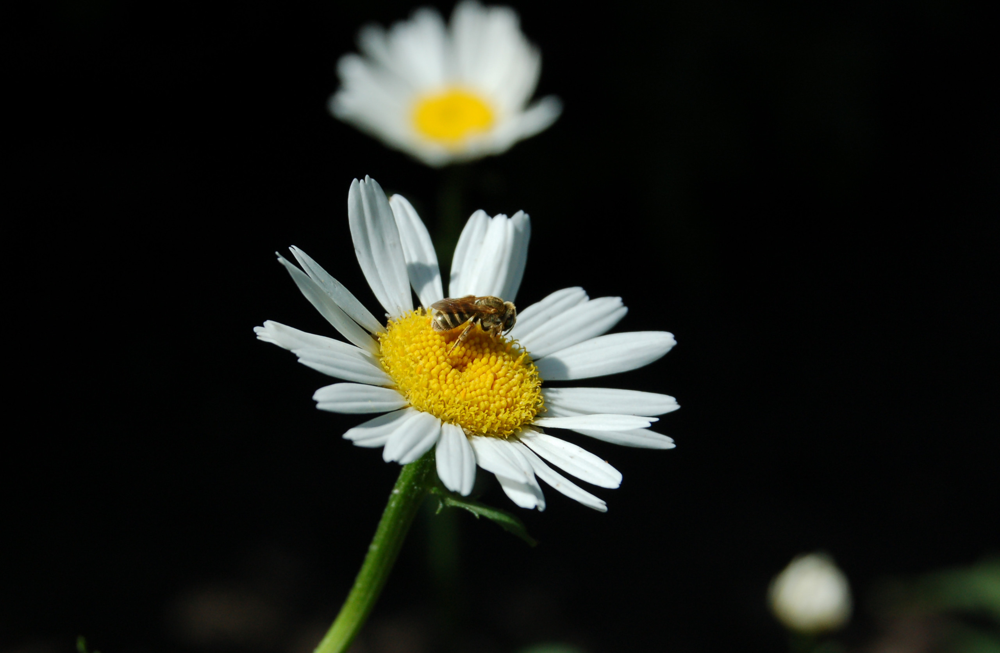

Дано три рисунки 300*300 пікселів. З використанням властивості elem.onclick прив'яжіть до кожного рисунку обробник події, щоб при натисканні на картинку console.log виводив значення її атрибуту width.
